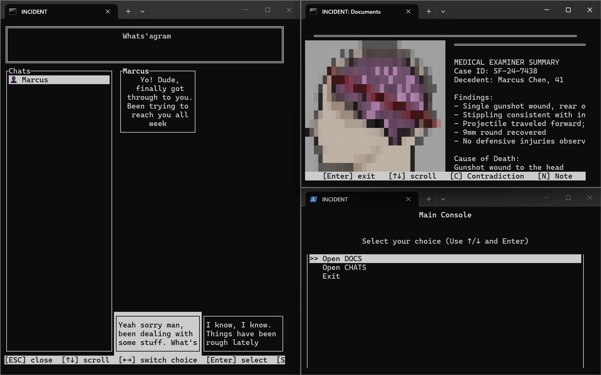
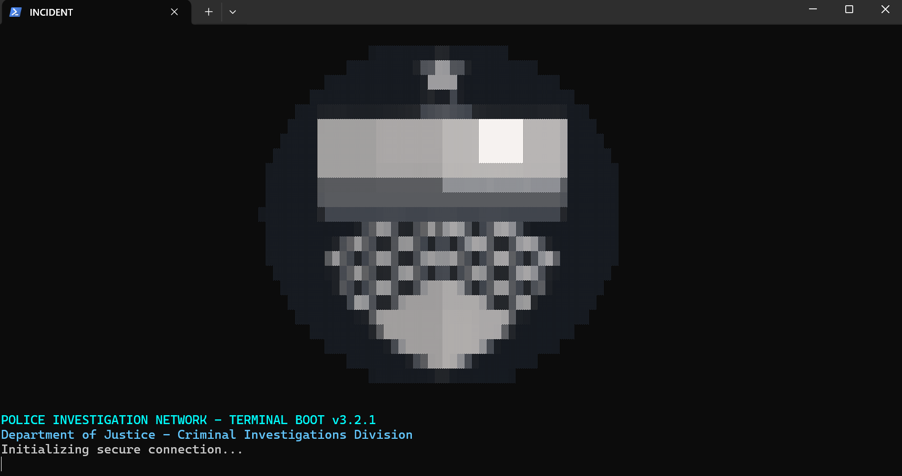
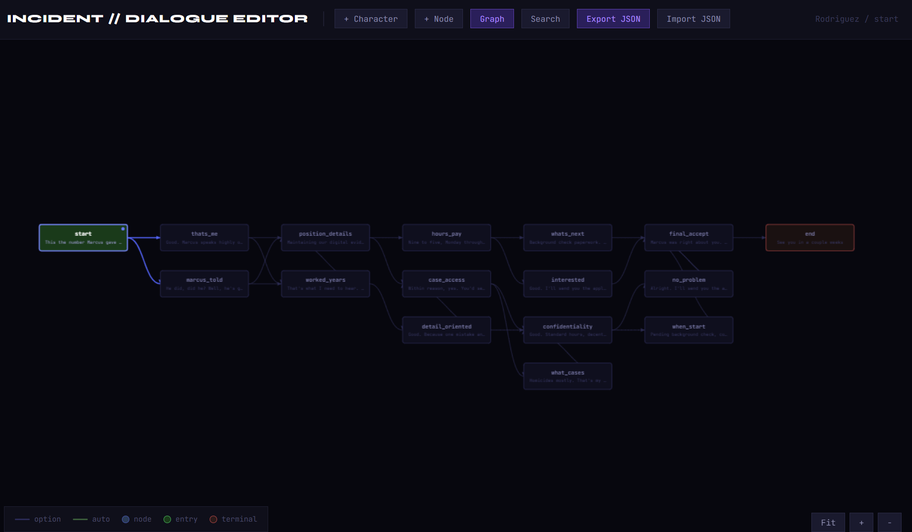

[WIP] A minimalist mystery puzzle game in the terminal. Read, cross-reference, and solve the case.

You are an investigator. You have access to documents, chat logs, and internal records. Your job is to find contradictions and solve the case.
Text-based investigation, password-protected files, branching narrative, and multiple endings based on your deductions.
Built with performance and reliability in mind. The core engine is designed for modular narrative content.

